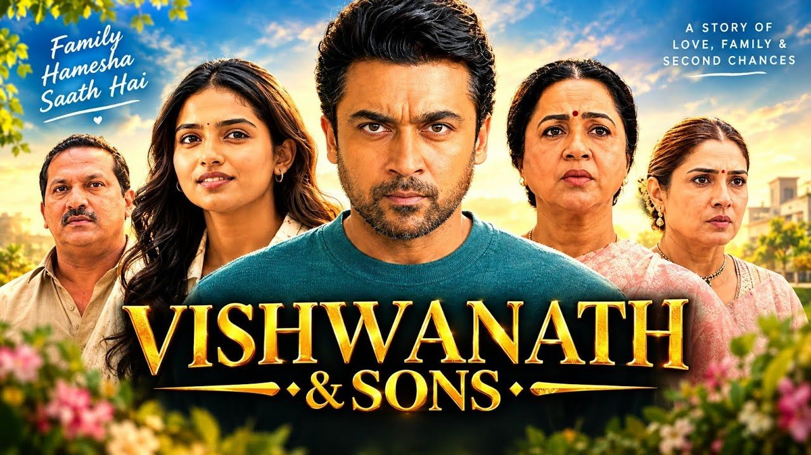

𝗩𝗶𝘀𝗵𝘄𝗮𝗻𝗮𝘁𝗵 & 𝗦𝗼𝗻𝘀 𝗢𝗧𝗧 𝗥𝗲𝗹𝗲𝗮𝘀𝗲
Suriya और Mamitha Baiju की चर्चित फिल्म Vishwanath & Sons अब Netflix पर रिलीज हो चुकी है। थिएटर में अपनी शानदार शुरुआत के बाद फिल्म 11 सितंबर 2026 से OTT पर स्ट्रीम हो रही है। अब जिन दर्शकों ने इसे सिनेमाघरों में नहीं देखा, वे घर बैठे Netflix पर इसे देख सकते हैं।
━━━━━━━━━━━━━━━━━━━━
𝗩𝗶𝘀𝗵𝘄𝗮𝗻𝗮𝘁𝗵 & 𝗦𝗼𝗻𝘀 𝗡𝗲𝘁𝗳𝗹𝗶𝘅 𝗽𝗮𝗿 𝗸𝗮𝗯 𝗿𝗶𝗹𝗲𝗮𝘀𝗲 𝗵𝘂𝗶?
Vishwanath & Sons का Netflix पर OTT प्रीमियर 11 सितंबर 2026 को हुआ है। फिल्म अब Netflix पर उपलब्ध है और इसे Hindi, Tamil, Telugu, Kannada और Malayalam भाषाओं में देखा जा सकता है।
━━━━━━━━━━━━━━━━━━━━
𝗩𝗶𝘀𝗵𝘄𝗮𝗻𝗮𝘁𝗵 & 𝗦𝗼𝗻𝘀 𝗸𝗶 𝗸𝗮𝗵𝗮𝗻𝗶 𝗸𝘆𝗮 𝗵𝗮𝗶?
फिल्म की कहानी Sanjay Vishwanath के इर्द-गिर्द घूमती है। Sanjay एक सफल Olympic shooter, businessman और पिता है, जिसकी जिंदगी उस समय बदलने लगती है जब उसके बच्चे की बीमारी उसे एक बेहद मुश्किल रास्ते पर ले जाती है।
अपने बच्चे के लिए donor की तलाश Sanjay को अमेरिका तक ले जाती है, लेकिन इस सफर में उसकी जिंदगी में रिश्तों, प्यार और भावनाओं से जुड़े कई unexpected मोड़ आते हैं।
━━━━━━━━━━━━━━━━━━━━
𝗦𝘂𝗿𝗶𝘆𝗮 𝗸𝗮 𝗸𝗶𝗿𝗱𝗮𝗿 𝗸𝘆𝗮 𝗵𝗮𝗶?
Suriya फिल्म में Sanjay Vishwanath का किरदार निभा रहे हैं। उनका character एक successful athlete और पिता है, जो अपने परिवार के लिए हर मुश्किल का सामना करने को तैयार दिखाई देता है।
फिल्म में Suriya का character सिर्फ action या commercial hero तक सीमित नहीं है। कहानी उसके personal relationships और emotional struggles को भी सामने लाती है।
━━━━━━━━━━━━━━━━━━━━
𝗠𝗮𝗺𝗶𝘁𝗵𝗮 𝗕𝗮𝗶𝗷𝘂 𝗸𝗮 𝗿𝗼𝗹𝗲 𝗸𝘆𝗮 𝗵𝗮𝗶?

Mamitha Baiju फिल्म की प्रमुख कलाकारों में शामिल हैं। उनकी मौजूदगी कहानी के emotional और romantic हिस्से को आगे बढ़ाती है।
Suriya और Mamitha Baiju की pairing फिल्म की प्रमुख attractions में से एक है।
━━━━━━━━━━━━━━━━━━━━
𝗙𝗶𝗹𝗺 𝗺𝗲𝗶𝗻 𝗸𝗮𝘂𝗻-𝗸𝗮𝘂𝗻 𝗵𝗮𝗶?
Vishwanath & Sons में Suriya और Mamitha Baiju के साथ Radikaa Sarathkumar, Raveena Tandon, Nassar, Rajiv Menon, Sudha, Sunil Reddy, Harsha Chemudu और Raghu Babu जैसे कलाकार भी नजर आते हैं।
फिल्म का निर्देशन Venky Atluri ने किया है। Music G. V. Prakash Kumar का है, जबकि cinematography Nimish Ravi और editing Navin Nooli ने संभाली है।
━━━━━━━━━━━━━━━━━━━━
𝗩𝗶𝘀𝗵𝘄𝗮𝗻𝗮𝘁𝗵 & 𝗦𝗼𝗻𝘀 𝗸𝗼 𝗡𝗲𝘁𝗳𝗹𝗶𝘅 𝗽𝗮𝗿 𝗸𝘆𝗼𝗻 𝗱𝗲𝗸𝗵𝗲𝗻?
अगर आपको family emotions, romance और heartfelt drama वाली फिल्मों में दिलचस्पी है, तो Vishwanath & Sons आपके लिए एक interesting OTT option हो सकती है।
फिल्म की कहानी एक ऐसे पिता की journey दिखाती है जो अपने बच्चे के लिए किसी भी हद तक जाने को तैयार है। इसी emotional core के साथ फिल्म में romance, relationships और personal choices को भी जोड़ा गया है।
━━━━━━━━━━━━━━━━━━━━
𝗩𝗶𝘀𝗵𝘄𝗮𝗻𝗮𝘁𝗵 & 𝗦𝗼𝗻𝘀 𝗢𝗧𝗧 𝗩𝗲𝗿𝗱𝗶𝗰𝘁
Vishwanath & Sons अब थिएटर के बाद Netflix पर अपनी OTT journey शुरू कर चुकी है। Suriya की strong screen presence, Mamitha Baiju की performance और family emotions पर आधारित कहानी इसे इस weekend की OTT watchlist में जगह दिला सकती है।
अगर आपने फिल्म थिएटर में मिस कर दी थी, तो अब इसे Netflix पर घर बैठे देख सकते हैं।